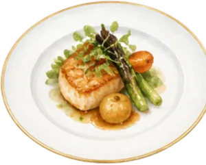
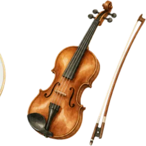
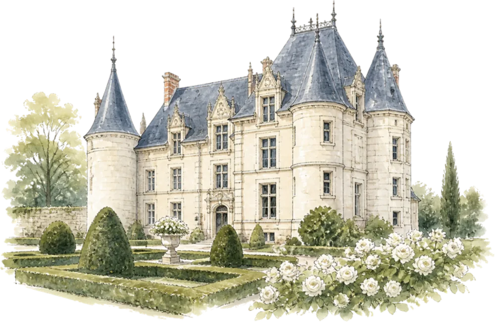
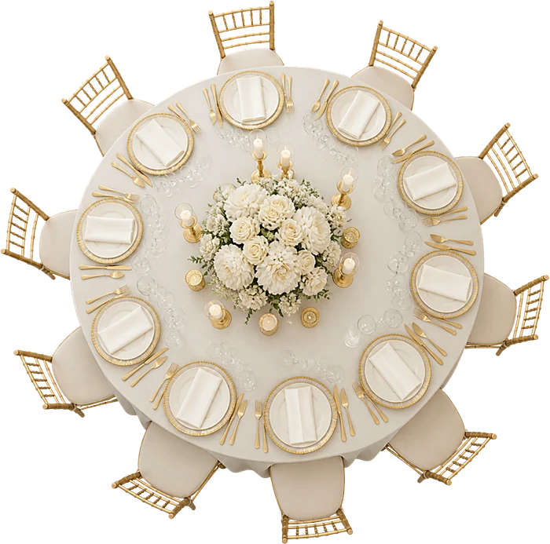
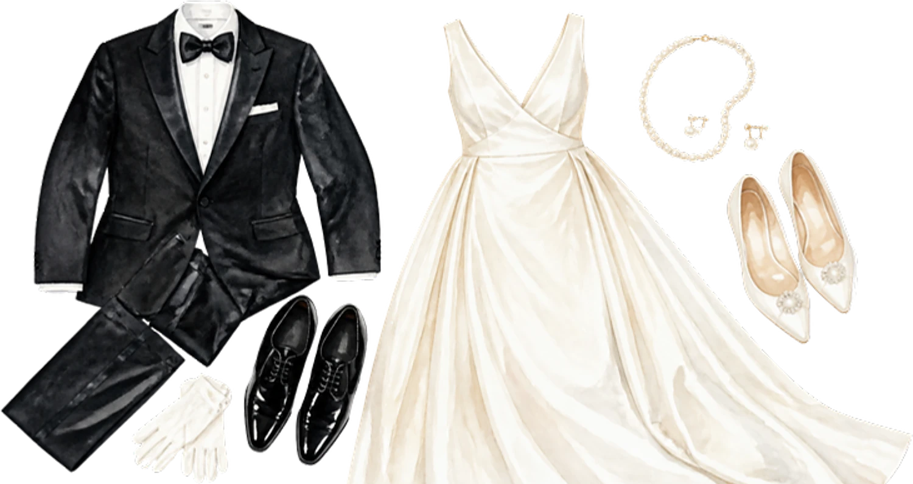

Ils se sont rencontrés sur les bancs de la faculté de droit, à Tours, et ne se sont jamais vraiment quittés.
Sarah & Thomas
Le programme
Samedi 26 juin 2027
- 15 h 00Échange des alliances
- 15 h 30Cérémonie à la chapelle
- 17 h 00Vin d’honneur dans le parc

19 h 30Dîner au château
22 h 00Ouverture du bal
23 h 30Pièce montée



Le lieu
Château de Valmont
Val de Loire
Tenue
Tenue de soirée
Smoking ou costume sombre pour les messieurs, robe longue pour les dames. Les couleurs pastel sont bienvenues, le blanc est réservé à la mariée.
Messieurs
Mesdames

Une surprise
Grattez le médaillon du bout du doigt

Il reste
--jours
--heures
--minutes
Votre réponse
Merci de répondre avant le 1er mai 2027.
Je serai présent·eJe ne pourrai pas venir